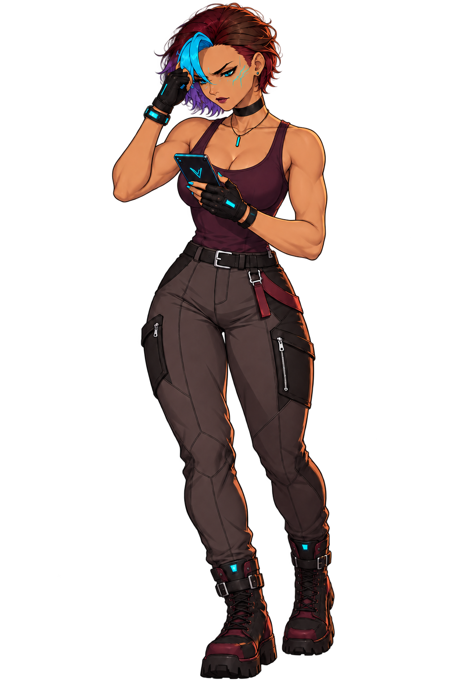
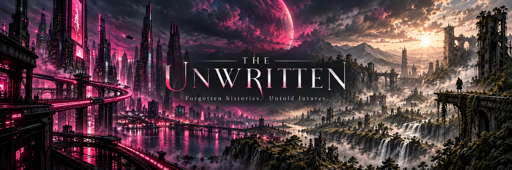

ERASURE.
One message. A mystery waiting to unfold.
When Liana Voss receives a message that shouldn't exist, the truth becomes harder to find—and harder to escape.

What happens when a message
changes everything?
A character-driven mystery involving secrets, unstable truths, and choices with consequences. Discover the story through cinematic scenes, branching conversations, and interactive investigation.
Behind the message.
An independent game takes more than a story idea. Follow the process behind the art, branching scenes, puzzles, testing, and creative decisions.
Explore all development updates →From an Idea to a Playable Mystery
How ERASURE grew from early Ren'Py experiments into a developing visual mystery—and what comes next.
Read Devlog #001 →Part of The Unwritten.

ERASURE and Code of the Outcasts are stories within The Unwritten—a broader universe of missing histories, hidden systems, and untold futures.
The next message is coming.
Want to follow development and hear about preview opportunities? Send an email request to join the updates list.
Clicking the button opens your email application with a prefilled request. No email is sent until you review and send it. Joining and unsubscribing are handled manually; your email address is not collected by this website.